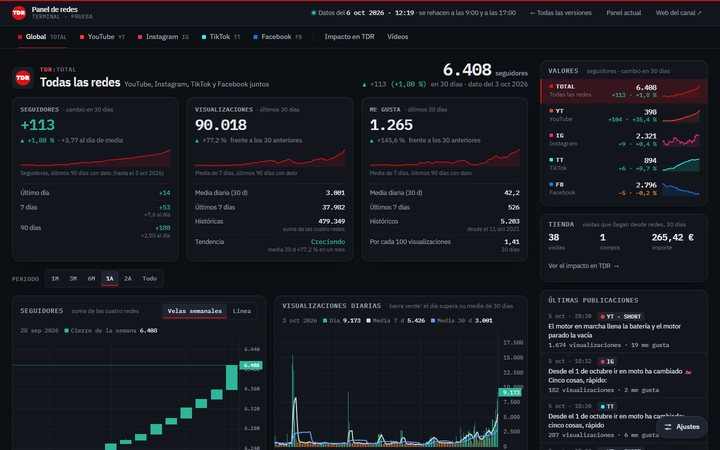
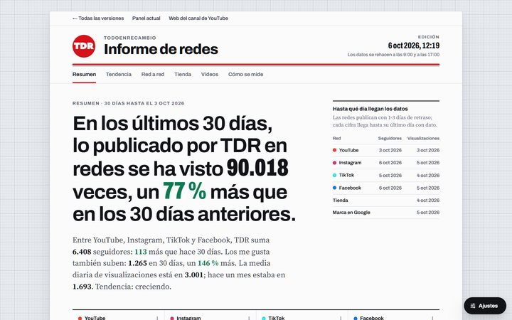
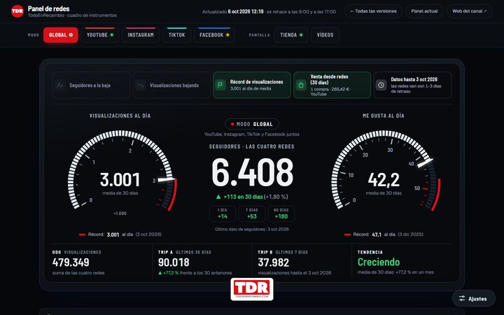
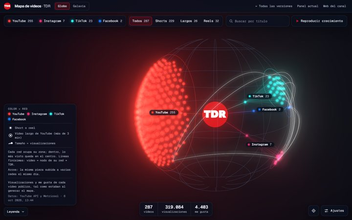
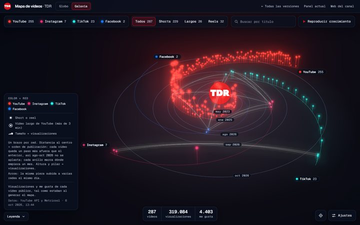
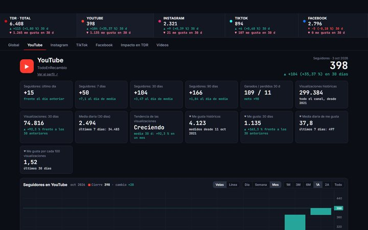

Terminal
Como una terminal de bolsa: cada red es un valor (TDR:YT, TDR:IG…), con su cotización, una cuadrícula de gráficas y las últimas publicaciones como teletipo.
Velas de día, semana o mes · Ajustes: 4 paletas · 3 letras · densidad · cuadrícula o columna · rejilla · cifras Abrir
Editorial
Un informe que se lee de arriba abajo: la portada es una frase escrita con los datos del mes y cada sección cuenta una parte (tendencia, red a red, tienda y vídeos).
Velas de día, semana o mes · Ajustes: papel técnico, imprenta y plano · letras · densidad · portada · ancho de lectura Abrir
Cuadro de instrumentos
El panel como la pantalla de una moto: cuentarrevoluciones de visualizaciones al día, cuentakilómetros con las históricas y testigos que solo se encienden cuando pasa algo.
Velas de día, semana o mes · Ajustes: noche, día, carbono y dorsal · letras · densidad · aguja · testigos · escala Abrir
Mapa de vídeos · Globo
Cada vídeo es una estrella del color de su red y su tamaño son las visualizaciones. Las redes forman constelaciones alrededor del logo. Con «Reproducir crecimiento» se ve cómo se ha ido llenando.
Ajustes: paletas · brillo · rotación · tamaño y color Abrir
Mapa de vídeos · Galaxia
Cada red es un brazo de la galaxia: cuanto más hacia fuera, más reciente; cuanto más alto, más visto. Se lee el tiempo y el alcance de un vistazo.
Ajustes: paletas · brillo · rotación · tamaño y color Abrir
Panel actual
El que está publicado hoy, ya con las velas por día, semana o mes. Se quedará como está hasta que elijas una versión.
AbrirEl mapa 3D no sustituye al panel: iría como una pestaña más («Mapa») dentro de la versión que elijas.